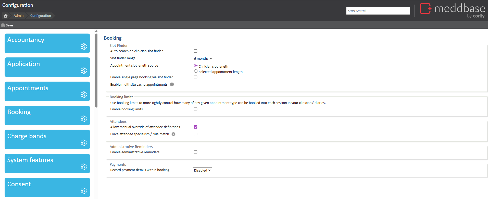

Meddbase System Administrators/Superusers with access to the Admin section of the Start Page can view and modify a host of configuration options and settings controlling the behaviour and workflows in the application. Many of the above are configured/controlled via the Configuration section*.
This article is a part of a collection of articles on the Admin > Configuration section.
Many of the settings described in this series have default values when a Meddbase chamber is first created and do not need changing.
* Access to the Admin section and the ability to add/change configuration and settings are determined by the User's Role Group membership and Security Policy permissions granted. Please refer to the below articles for more details.
Understanding Role Groups - Definitions, related workflows and behaviours
This article is an overview of the Admin > Configuration > Booking section and the available settings within.
To access the Configuration section, a permitted User should:
1. From the Start Page navigate to Admin.
2. Click Configuration.
3. Click Booking.

The below table explains each setting, field and/or tick box in detail.
| Setting | Description/effect |
|---|---|
| Slot Finder | |
| Auto-search on clinician slot finder | This checkbox controls whether a user needs to click a 'search' button before results are shown when booking an appointment via the Slot Finder. When ticked/set to 'True', the search for available slots happens automatically in the Slot Finder after the parameters for the search are set. |
| Slot finder range | This dropdown allows you to select how far into the future the Slot Finder will be allowed to search for appointment slot availability |
| Appointment slot length source | These checkboxes allow you to select the 'source of truth' for the available slot search result in the Slot Finder. If Clinician slot length is selected, the available slots will be presented according to the clinician's time slot size set under Clinician Details > Personal Details > Schedule > Time slot size, e.g. Time slot size set to 30 mins = appointment slot available every 30 mins If Selected appointment length is selected, the available slots will be presented according to the given appointment type's default duration set under Admin > Appointment Admin > [Edit] > Default Duration, e.g. appointment type default duration set to 15 mins = appointment slot available every 15 mins |
| Enable single page booking via slot finder | This checkbox controls whether the 'Book Appointment' page that normally appears after the Slot Finder will be displayed, or some of the fields from that page will be brought into the Slot Finder When ticked/set to 'True', the fields: Subject, Notes, Cancellation Policy, as well as the Send Confirmation and Telemedicine checkboxes, are shown in the Slot Finder. Clicking 'Proceed' on the 'Appointment Search' page books the appointment and brings the user directly to the Appointment Home page. |
| Booking Limits | |
| Enable Booking Limits | Use booking limits to more tightly control how many of any given appointment type can be booked into each site session in your clinicians' diaries. When enabled, this feature is available in Site Scheduler. |
| Attendees | |
| Allow manual override of attendee definitions. | This controls user's ability to override the changes of attendees on the Appointment Confirmation and Setup page. See How to use Attendee Replacement – Meddbase Help Center for functionality. |
| Force attendee specialism/role match | This applies when booking through the slot-finder for services and appointments that have attendee definitions. When enabled, if there are two or more attendee definitions that have the same specifier (specialism or role) that will not overlap, this option will force the selected attendee for the appointment to be the same across any matching definitions. |
| Administrative Reminders | |
| Enable administrative reminders | Administrative reminders are designed to act as prompts during the booking process for patients linked to a specific company. Once enabled, this will provide a free-text section on the Company record page. These reminders will appear during booking, on the appointment home and on the Patient record. See Company Administrative Reminders – Meddbase Help Center for functionality. |